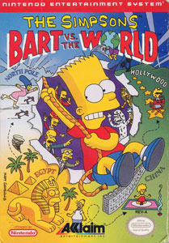

Hi my name is Ciprian I was born in Europe Romania, I came to the U.S. in 1992. I'm a web developer who loves video games. I've played video games since 1994 when one of my friends introduced me to Super Mario Bro's for the NES. He soon bought himself a Super Nintendo and then sold me his NES which my dad bought. I was hooked on Mario played for hours, beat it over and over again. After a few months my brother and I looked everywhere for NES games. Swap Meets, Garage Sales, Thrift Stores, and I was broke, barely had anything since my parents both came from Romania and making money was hard for them since they spoke very little English. I couldn't find any cheap games since in 1994 SNES just came out and NES games were still in the 50$ at the local electronic stores. But I found ways to play games, Best Buy and CompUsa(RIP...) had games on display SNES, Genesis, Nintendo, and Pc games which I played almost everyday after school. My birthday came and my dad bought me Bart vs the worldThe Simpsons Video Game For NES. for NES. That game is crazy hard it took me years to beat it not until I was 23 that I finally beat it almost 8 years later, so I got so frustrated that I gave up on the game in just a few short months. Soon after I made enough money to buy another game Robocop for the NES, another hard game, most NES were really hard especially Contra but fun at the same time. Robocop a game based on the movie but didn't even come close, but I enjoyed it as a kid now looking at it I think to myself how did I even play that game I can't even finish the first level. As the years went on I got a Super Nintendo, a Sega Genesis, Sony Playstation, I owned almost every console ever made. Since I started playing games to today I played over 200 games.